Home
Brake Fluid Supply Bottle
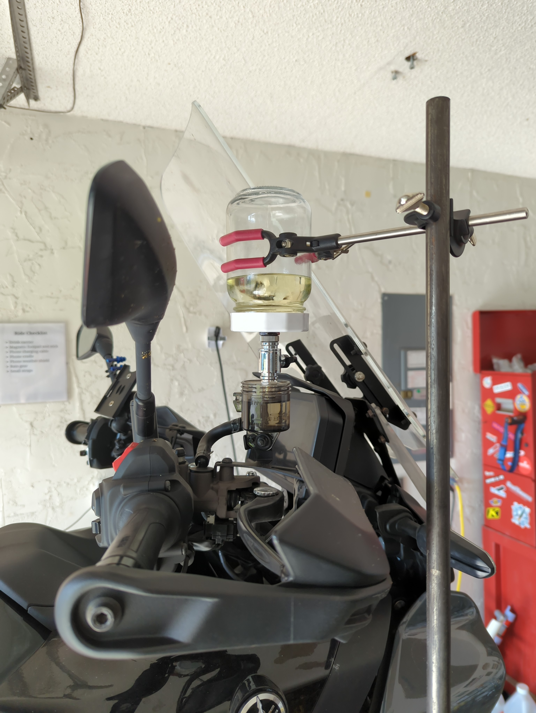
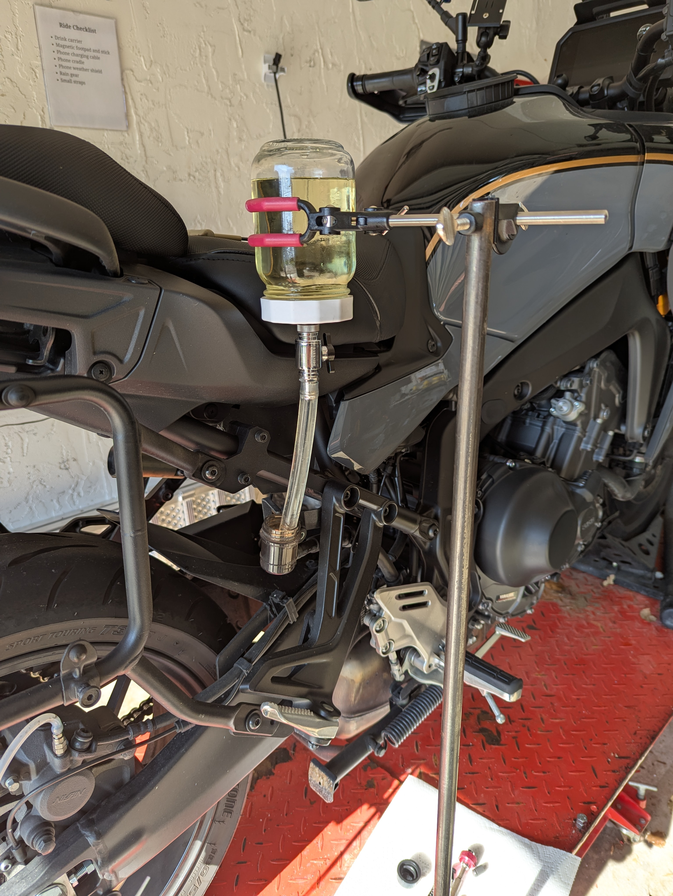
I do all the maintenance on my bikes by myself, so I need to be a little creative when it comes to replacing
brake and clutch fluid, as this is usually a two-person job.
For the caliper end of things, I use Stahlbus bleeder
valves. They're far superior to SpeedBleeders, and worth the price. (see discussion
below)
For the master cylinder end, I created a cheap brake fluid supply bottle out of a pint Mason canning jar and $30
in computer water-cooling parts. It has a valve to open and close it.
To hold it in place, I use some labware clamps which attach the jar to a 5/8" steel rod, and a photography clamp
that clamps the rod to the bike lift.
I've used pressure bleeders and other equipment, but this is the simplest and cleanest method I've used so far.
I've used commercial supply bottles, but they're all designed for cars and don't attach well to the master
cylinder, and the valves are usually very poor quality. They end up leaking fluid everywhere, and make more of a
mess and hassle than they save.
Usage
- Clamp the 5/8" rod to edge of the bike lift with the Promaster clamp as close as possible to the brake
reservoir.
- Remove the brake fluid reservoir lid and suck as much of the old fluid out as possible, using a plastic
syringe.
- Fill the mason jar with brake fluid.
- Close the valve.
- Flip the jar over.
- If you're doing the rear brakes, you'll probably need a short piece of hose over the barb fitting.
- Grip the jar with the glassware clamp.
- Fit the clamp rod into the right angle clamp and slip the other end of the right angle clamp over the 5/8" rod.
- Align the jar where you need it, and tighten the right angle clamp. The tip of the barb fitting will control the
fluid level.
- Open the valve. As the fluid drops below the barb, air bubbles into the bottle, which releases fluid to raise
the level back up to the bottom of the barb. It's the same principle as Harbor Freight or Mityvac bottles, but it
actually works.
- Attach a hose to the Stahlbus bleeder going to a waste jar.
- Open the Stahlbus bleeder and pump the old brake fluid out with the lever.
- When you're using the hose for the rear reservoir, close the valve before you're done pumping, and pump the
fluid out of the hose until the fluid drops to the proper level in the reservoir.
- Close the Stahlbus bleeder tightly and remove the hose.
PC water cooling parts
They're generic parts you should be able to find at any computer performance shop online.
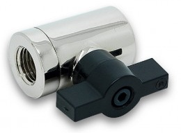 |
Ball valve (10mm) G1/4" ($19)
Prevents spilling when the bottle is inverted. |
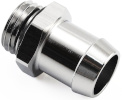 |
G1/4" to 1/2" barb fitting ($3)
Controls the level of fluid in the master cylinder reservoir. |
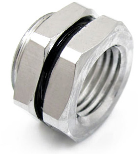 |
G1/4" to G1/4" bulkhead fitting ($5)
Seals the bottle lid and provides a mount for the ball valve. |
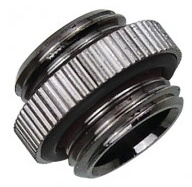 |
Nozzle coupling adapter, G1/4" male-male ($3)
Connects the ball valve to the bulkhead fitting. |
Labware parts
Look for this at science/lab supply stores online.
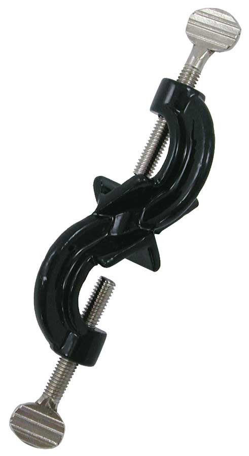 |
Right-angle clamp ($9) |
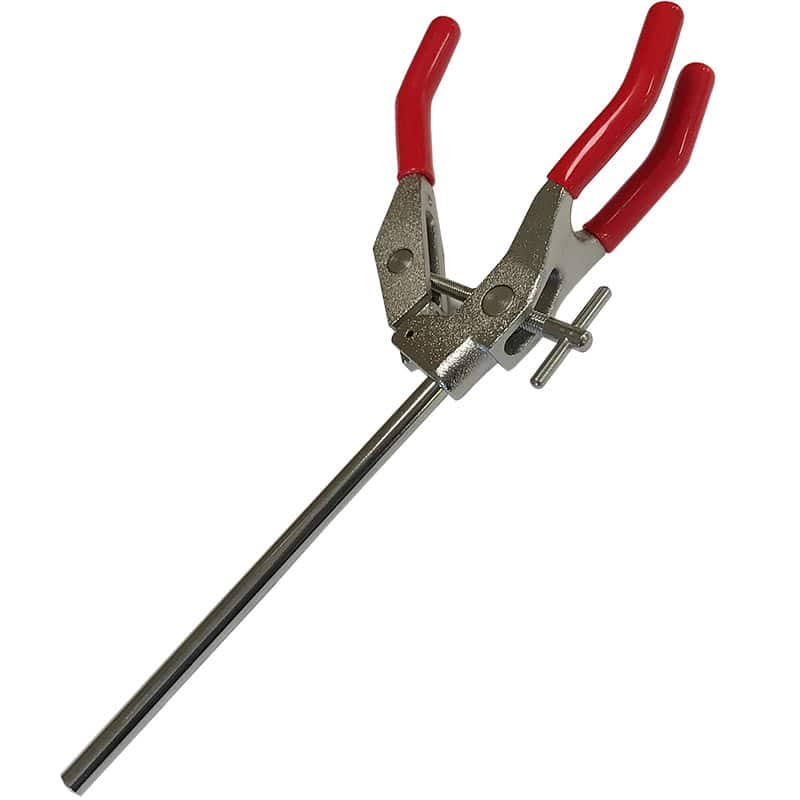 |
10" 3-finger labware clamp ($12) |
Other parts
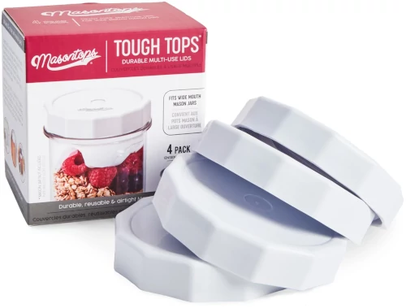 |
A box of "Tough Tops"
from masontops.com or the local Publix.
These are heavy-duty plastic one-piece mason jar tops with a nice silicone seal and a "premarked center"
(the injection molding scar) for drilling. They don't require a washer for reinforcement, and they
aren't affected by brake fluid.
Normal lids are thin sheet metal which is not really up to the task. |
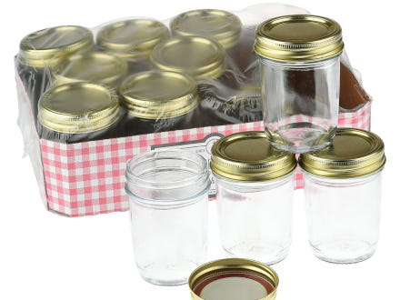 |
Pint (16oz) standard-mouth smooth Mason jars. Glass is best.
Do not get the quart size jars, or the large-mouth jars. They're too big and heavy.
Do not get Ball jars. They have all sorts of decorations that cause problems with cracking, including
their "smooth" ones. I got Anchor-Hocking jars, which are truly smooth and are available in 6-packs at
my local Publix. |
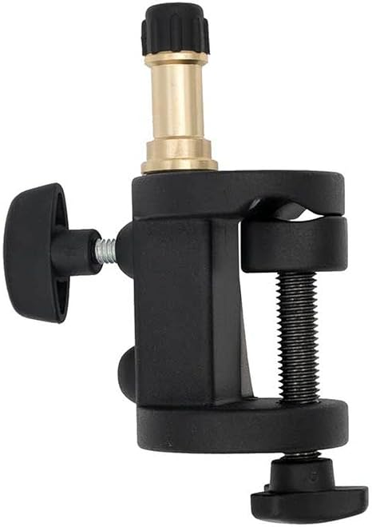 |
Promaster #5507 photographer's clamp ($20)
Remove the brass fitting on the top.
This clamps the steel rod to the bike lift. |
Also Required:
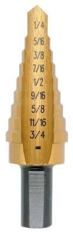 |
5ft 5/8" steel rod ($8)
Short piece of hose for rear brake
Necessary tool: drill and #3 step bit (AKA "unibit") |
|
Bottle Assembly
- Drill a 5/8" hole in the center of the "Tough Tops" plastic lid with a #3 (1/4"-3/4") step bit (also known as
a unibit) to accept the bulkhead fitting. This is the best way to cut the thin plastic of the lid.
After you cut the hole, flip the lid over and lightly touch the bit to the plastic to remove any burrs.
- Screw the bulkhead fitting to the lid, with the o-ring on the inside.
- Screw the nozzle coupling adapter on the bulkhead fitting. It has its own pair of o-rings.
- Screw the ball valve to the coupling.
- Screw the short barb fitting to the ball valve.
A note about SpeedBleeders vs. Stahlbus bleeders
SpeedBleeders are brake bleeder nipples with spring-loaded one-way check-valve balls. They're a nice idea.
The problem is when you loosen them to release the check-valves, fluid leaks out and air is sucked in past the
threads where they screw into the caliper.
You can work around this by smearing grease around the threads or other methods, but it's still a mess.
With Stahlbus bleeders, the nipple with the check-valve screws into an O-ring sealed chamber, which then screws
solidly into the caliper. No leaks.
Another advantage of the design is that you can control how loose the valve is, and how easily it passes
fluid. You can even loosen them enough to fill the system through the bleeders.